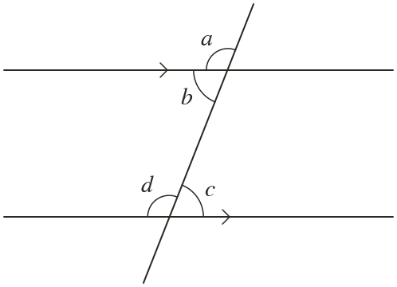
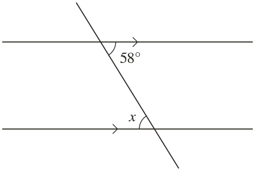
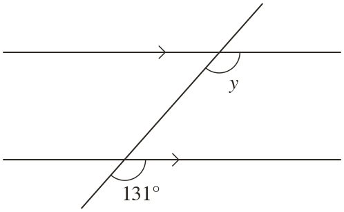
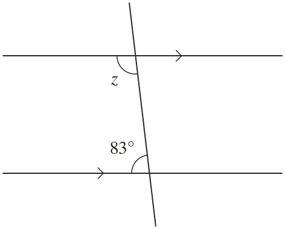

Westonbirt Maths · Parallel Lines and Quadrilaterals
Angles in Parallel Lines
Name: ______________________ Date: ____________
1
Corresponding, alternate or co-interior? (a) a and (b) b and c (c) b and

2
Find giving a reason.

3
Find giving a reason.

4
Find giving a reason.

5
Two lines with no arrows are crossed by a transversal. Eli says the angle corresponding to is What is his mistake?
Ext
Two co-interior angles differ by Find both angles.